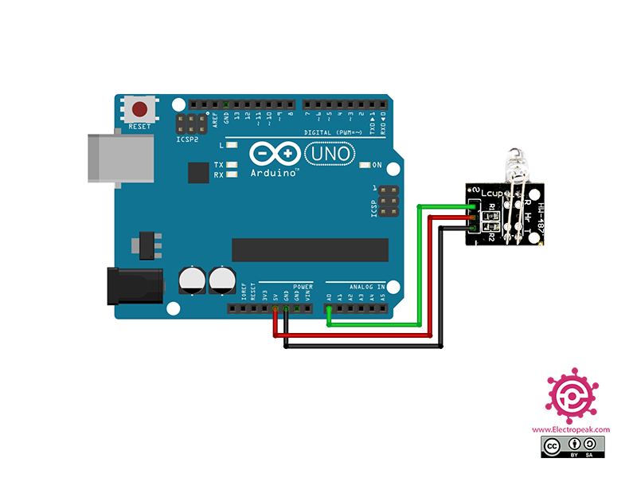

Course: TECH 117 (Computer Engineering Technology, Fall 2025)
Instructor: Ph.D. Ana Rodrigues
Team Members:
This project uses an Arduino Uno, an KY-039 heartbeat sensor, a passive buzzer, an LED, and an LCD to measure and determine the health of one’s pulse. The system is designed with first aiders in mind, so it should be easy to use and eventually compact enough to fit into first aid kits.
Our project connects to the United Nations Sustainable Development Goal 3, Good Health and Well-Being, by exploring a low-cost, accurate way to find a pulse easily in emergency first aid situations. A cheap, portable device in a first aid would allow first-aiders to keep assessing a casualty while the pulse is being measured. Since our prototype is only a proof of concept and not a medical device, it does not yet meet this goal, but it shows how accessible technology could support it in the future. Our prototype needs to do three things: detect a casualty’s pulse, produce a buzz and flash of light for each detected beat, and display the BPM along with whether it is normal, too high, or too low. Ideally, our prototype would somehow be able to determine the casualty’s age since the range of a healthy pulse depends on one’s age. It would also be nice to have a feature that could measure the strength of the casualty’s pulse and display that through the use of multiple LEDs. However, due to time constraints and our limited level of expertise, these may be features that will have to be implemented in future variations of this device. We will test each function separately before combining them. We will consider the prototype successful if the buzzer and LED respond to each beat, the displayed BPM is close to a reference reading taken at the same time (a manual pulse count or smart watch) in a closed, controlled environment, and if the LCD shows the correct category based on a specified range. Aside from the time and experience limitations of this project, our heartbeat sensor, the KY-039, is not available in Tinkercad, so we can not fully test the circuit or code before building it. Additionally, the sensor we are using for this prototype needs to be covered and under perfect conditions in order to return reliable readings. Otherwise, we will report our measured results and include any features that do not work reliably.The KY-039 heartbeat sensor detects your pulse; the Arduino activates LEDs and the buzzer according to heart rate thresholds. On the right is the connections for the ky-039 sensor specifically, it is substituted for a photo resistor in the full circuit diagram because the ky-039 is not in tinker cad.


We considered two optical sensors for detecting a pulse: the Pulse Sensor and the KY-039 Heartbeat Sensor.
| Pulse Sensor | KY-039 Heartbeat Sensor | |
|---|---|---|
| How it works | Shines green LED on the skin and measures the light reflected back. | Measures the infrared light passing through the fingertip. |
| Advantages |
|
|
| Disadvantages |
|
|
| Sustainability Pros |
|
|
| Sustainability Cons |
|
|
| Item | Description | Qty | Specifications | Estimated Cost (per piece) | Supplier |
|---|---|---|---|---|---|
| 1 | Elegoo Uno R3 with USB cable (Arduino compatible) | 1 |
|
CAD $24.99 | Amazon |
| 2 | KY-039 Heartbeat sensor module | 1 |
|
CAD $1.28 | Alibaba |
| 3 | Jumper wires (heartbeat sensor to controller board) | 3 | Male-to-female | CAD $0.08 | Amazon |
| 4 | 1602A LCD module | 1 |
|
CAD $2.18 | Alibaba |
| 5 | WH148 linear potentiometer | 1 |
|
CAD $0.14 | Alibaba |
| 6 | Passive Buzzer | 1 |
|
CAD $0.16 | Alibaba |
| 7 | Resistor for Buzzer | 1 |
|
CAD $0.08 | Amazon |
| 8 | LED (any colour) | 1 |
|
CAD $0.15 | Alibaba |
| 9 | Resistor for LED and LCD | 2 |
|
CAD $0.04 | Amazon |
| 10 | Breadboard | 1 |
|
CAD $4.33 | Amazon |
| 11 | Jumper wires | ~25 | Male-to-male | CAD $0.08 | Amazon |
| 12 | TinkerCAD | 1 | Used to simulate and test circuit before building | Free | — |
| 13 | Arduino IDE (software) | 1 | Used to write, upload, and monitor code | Free | — |
| 14 | Computer for programming | 1 | Any computer with Arduino IDE installed | — | — |
| TOTAL | CAD $35.63 | ||||
The following image shows the assembled prototype on a breadboard.

The following Arduino code controls the system, lighting LEDs and activating the buzzer based on distance readings from the HC-SR04 sensor.
// Collision Warning System with Distance Sensor (HC-SR04)
// Author: Ana Rodrigues
// Oct 2, 2025
// Object is farther than 50cm: Green LED lights up
// Object is closer than 50 cm, but more than 10cm away: Yellow LED lights, buzzer plays 300Hz tone
// Object is closer than 10cm: Red LED lights up, buzzer plays 500Hz tone
//LED pins
const int greenLED = 2;
const int yellowLED = 3;
const int redLED = 4;
// Ultrasonic sensor pins
const int trigPin = 9;
const int echoPin = 10;
// Passive buzzer pin
const int buzzer = 11;
void setup() {
pinMode(greenLED, OUTPUT);
pinMode(yellowLED, OUTPUT);
pinMode(redLED, OUTPUT);
pinMode(trigPin, OUTPUT);
pinMode(echoPin, INPUT);
Serial.begin(9600);
}
void loop() {
// Measure distance
digitalWrite(trigPin, LOW);
delayMicroseconds(2);
digitalWrite(trigPin, HIGH);
delayMicroseconds(10);
digitalWrite(trigPin, LOW);
long duration = pulseIn(echoPin, HIGH);
long distance = duration * 0.034 / 2;
Serial.print("Distance: ");
Serial.print(distance);
Serial.println(" cm");
//Error in measurement:
if (distance <= 0)
return;
//Too close:
if (distance <= 10) {
digitalWrite(greenLED, LOW);
digitalWrite(yellowLED, LOW);
digitalWrite(redLED, HIGH);
tone(buzzer, 500); // Play 500Hz tone
return;
}
//Midrange:
if (distance <= 30) {
digitalWrite(greenLED, LOW);
digitalWrite(yellowLED, HIGH);
digitalWrite(redLED, LOW);
tone(buzzer, 300); // Play 300Hz tone
return;
}
//Normal status:
digitalWrite(greenLED, HIGH);
digitalWrite(yellowLED, LOW);
digitalWrite(redLED, LOW);
noTone(buzzer); // stop buzzer
delay(100);
}
The system effectively demonstrates distance-based alerting using Arduino. It’s affordable, educational, and sustainable through reusable components.